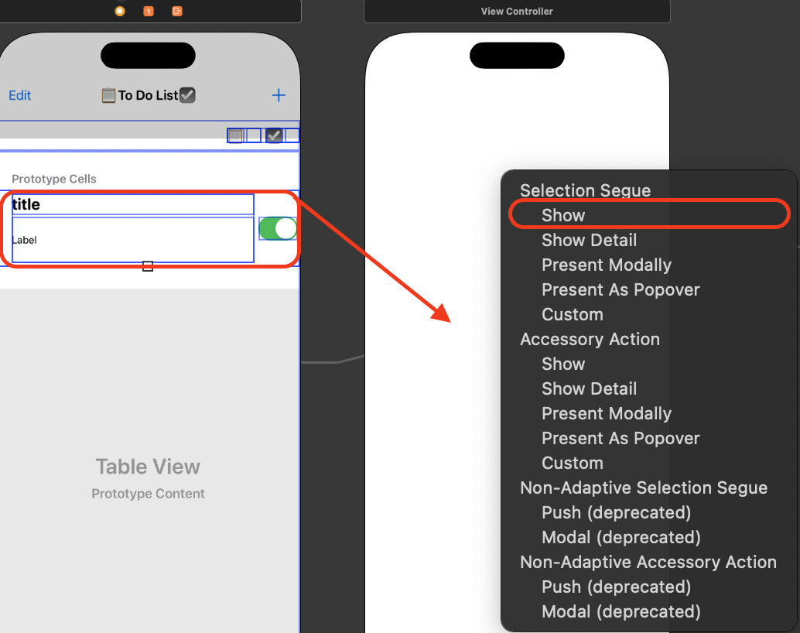
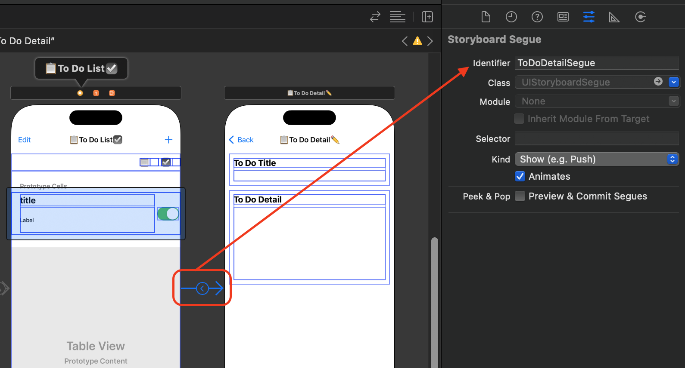
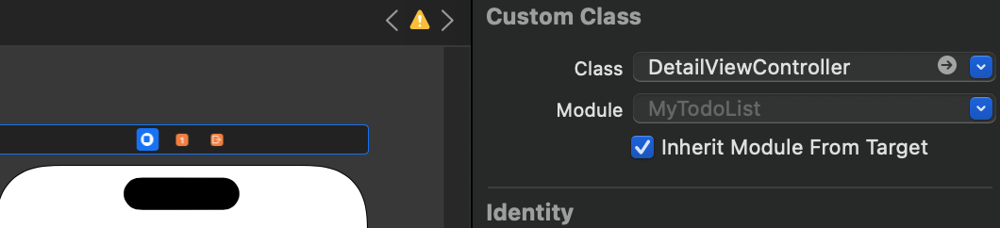
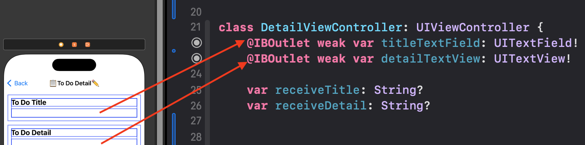

[UIKit] TableView Row 선택 후 화면 이동하기
Row 선택 후 화면 이동하기
- ViewController를 만들고 TableView Row를 선택하면 Cell의 정보를 확인하는 방법입니다.
1. 실행화면
2. View Controller 생성 및 세그웨이(Segue) 선택
- 세그웨이 연결 후 row를 선택하면 View Controller가 연결됩니다.
- Cell의 데이터를 View Controller로 전달해주기 위해 설정 및 코드를 추가해야합니다.

3. 세그웨이 식별자 설정
- 세그웨이 이름을 ToDoDetailSegue로 지정하였습니다.

4. UIViewController를 상속받는 class 파일 생성
- DetailViewController 이름의 class 파일 생성했습니다.
5. View Controller에 생성한 class 파일 연결
- 스토리보드 컨트롤뷰와 클래스파일을 연결합니다.

6. DetailView Controller에서 아울렛 변수 설정
- 아울렛 변수를 생성하고 코드를 수정합니다.

class DetailViewController: UIViewController {
@IBOutlet weak var titleTextField: UITextField!
@IBOutlet weak var detailTextView: UITextView!
//ViewController에서 전달 받은 데이터를 저장하는 변수
var receiveTitle: String?
var receiveDetail: String?
override func viewDidLoad() {
super.viewDidLoad()
//화면이 실행될때 ViewController에서 받은 데이터를 아울렛 변수에 할당
titleTextField.text = receiveTitle
detailTextView.text = receiveDetail
7. View Controller에서 prepare 매서드 설정
- TableView가 있는 클래스파일에서 prepare 메서드 설정
//스토리보드에서의 화면 이동
override func prepare(for segue: UIStoryboardSegue, sender: Any?) {
//화면 이동할때 세그웨이 식별자 확인
if segue.identifier == "ToDoDetailSegue" {
let cell = sender as! UITableViewCell //sender를 UITableViewCell로 캐스팅하여 Cell에 할당
let indexPath = self.myTodoListTableView.indexPath(for: cell) //TableView에서 선택한 셀의 indexPath 가져오기
let detailView = segue.destination as! DetailViewController //세그웨이 목적지를 새로만든 클래스파일로 형변환
//DetailViewController에 생성한 아울렛 변수에 title, detail 데이터 할당
detailView.receiveTitle = myToDoListArray[indexPath!.row].toDoTitle
detailView.receiveDetail = myToDoListArray[indexPath!.row].toDoDetail
}
}
8. 실행
- 처음 동영상처럼 로우를 선택하면 ViewController의 Cell데이터를 DetailViewController에서도 확인할 수 있습니다.
Detail 화면에서 데이터 수정하기
- Detail View Controller에서 Title의 TextField, Detail의 TextView를 수정하고 되돌아 갔을때 ViewController에서도 수정된 데이터를 볼 수 있는 예제입니다.
1. 실행 화면
2. 델리게이트 채택
- DetailViewController에서 TextField와 TextView 델리게이트 채택 후 메서드를 구현합니다.
// MARK: - 타이틀 처리를 위한 델리게이트
extension DetailViewController: UITextFieldDelegate {
//UITextField에 텍스트를 입력하거나 삭제할 때마다 호출
func textFieldDidChangeSelection(_ textField: UITextField) {
}
}
// MARK: - 디테일 처리를 위한 델리게이트
extension DetailViewController: UITextViewDelegate {
// UITextView에 텍스트를 입력하거나 삭제할 때마다 호출
func textViewDidChange(_ textView: UITextView) {
}
}
3. 델리게이트 설정
- 델리게이트를 설정합니다.
override func viewDidLoad() {
super.viewDidLoad()
//ViewController에서 받은 데이터 할당
titleTextField.text = receiveTitle
detailTextView.text = receiveDetail
//델리게이트 설정
titleTextField.delegate = self
detailTextView.delegate = self
}
4. 델리게이트 프로토콜 정의
- 프로토콜을 정의하고 선언합니다.
import UIKit
//TextField 델리게이트
protocol DetailViewControllerTitleDelegate: AnyObject {
func textFieldDidChangeSelection(_ controller: DetailViewController, textField: String)
}
//TextView 델리게이트
protocol DetailViewControllerDetailDelegate: AnyObject {
func textViewDidChange(_ controller: DetailViewController, textView: String)
}
class DetailViewController: UIViewController {
//코드생략
//델리게이트 선언
var titleDelegate: DetailViewControllerTitleDelegate?
var detailDelegate: DetailViewControllerDetailDelegate?
5. 메서드 구현
- 델리게이트 채택 후 생성한 메서드를 구현합니다.
// MARK: - 타이틀 처리를 위한 델리게이트
extension DetailViewController: UITextFieldDelegate {
func textFieldDidChangeSelection(_ textField: UITextField) {
//textField 확인 후 nil 체크
if textField == titleTextField {
if textField.text != nil {
//textField의 변경을 알림
titleDelegate?.textFieldDidChangeSelection(self, textField: textField.text!)
}
}
}
}
// MARK: - 디테일 처리를 위한 델리게이트
extension DetailViewController: UITextViewDelegate {
func textViewDidChange(_ textView: UITextView) {
//textView 확인 후 nil 체크
if textView == detailTextView {
if textView.text != nil {
//textView 변경 알림
detailDelegate?.textViewDidChange(self, textView: textView.text)
}
}
}
}
6. ViewController에서 생성한 델리게이트 채택
- 필수 메서드를 구현하고 ViewController의 배열에서 title, detail 데이터를 수정하면 되는데 indexPath를 알 수 없습니다.
// MARK: - 디테일 뷰에서 타이틀 입력
extension ViewController: DetailViewControllerTitleDelegate {
func textFieldDidChangeSelection(_ controller: DetailViewController, textField: String) {
//ViewController에 있는 배열의 데이터 수정
}
}
// MARK: - 디테일 뷰에서 디테일 입력
extension ViewController: DetailViewControllerDetailDelegate {
func textViewDidChange(_ controller: DetailViewController, textView: String) {
//ViewController에 있는 배열의 데이터 수정
}
}
7. DetailViewController에서 indexPath 받을 변수 생성하기
- receiveIndexPath 옵셔널 변수와 indexPath 변수를 선언합니다.
- ViewDidLoad에서 indexPath 변수의 값을 receiveIndexPath로 할당합니다.
class DetailViewController: UIViewController {
@IBOutlet weak var titleTextField: UITextField!
@IBOutlet weak var detailTextView: UITextView!
//ViewController에서 전달 받은 데이터 저장
var receiveTitle: String?
var receiveDetail: String?
var receiveIndexPath: Int? //IndexPath를 받기위한 변수
var indexPath: Int = 0
var titleDelegate: DetailViewControllerTitleDelegate?
var detailDelegate: DetailViewControllerDetailDelegate?
override func viewDidLoad() {
super.viewDidLoad()
titleTextField.text = receiveTitle
detailTextView.text = receiveDetail
indexPath = receiveIndexPath! //indexPath 저장
8. ViewController에서 prepare 메서드 수정
- IndexPath를 전달하는 코드와 델리게이트를 설정합니다.
override func prepare(for segue: UIStoryboardSegue, sender: Any?) {
if segue.identifier == "ToDoDetailSegue" {
let cell = sender as! UITableViewCell
let indexPath = self.myTodoListTableView.indexPath(for: cell)
let detailView = segue.destination as! DetailViewController
detailView.receiveTitle = myToDoListArray[indexPath!.row].toDoTitle
detailView.receiveDetail = myToDoListArray[indexPath!.row].toDoDetail
detailView.receiveIndexPath = indexPath!.row //IndexPath 전달
detailView.titleDelegate = self //타이틀처리를 위한 TextField 델리게이트
detailView.detailDelegate = self //디테일처리를 위한 TextView 델리게이트
}
}
9. ViewController에서 채택한 메서드 수정
- indexPath를 받아 올 수 있어 배열을 수정합니다.
- 수정된 데이터를 확인할 수 있도록 reload 합니다.
// MARK: - 디테일 뷰에서 타이틀 입력
extension ViewController: DetailViewControllerTitleDelegate {
func textFieldDidChangeSelection(_ controller: DetailViewController, textField: String) {
if let indexPath = controller.receiveIndexPath {
myToDoListArray[indexPath].toDoTitle = textField //타이틀 자동저장
self.myTodoListTableView.reloadData() //테이블 뷰 리로드
}
}
}
// MARK: - 디테일 뷰에서 디테일 입력
extension ViewController: DetailViewControllerDetailDelegate {
func textViewDidChange(_ controller: DetailViewController, textView: String) {
if let indexPath = controller.receiveIndexPath {
myToDoListArray[indexPath].toDoDetail = textView //디테일 자동저장
self.myTodoListTableView.reloadData() //테이블 뷰 리로드
}
}
}
10. 실행
- 처음 동영상처럼 ViewController의 TableView에서 Row를 선택하면 DetailViewController 화면으로 이동하고 DetailViewController에서 ViewController Cell데이터를 확인할 수 있습니다.
마무리
- 데이터를 주고 받을 때 델리게이트를 사용해서 주고 받는 연습이 됩니다.